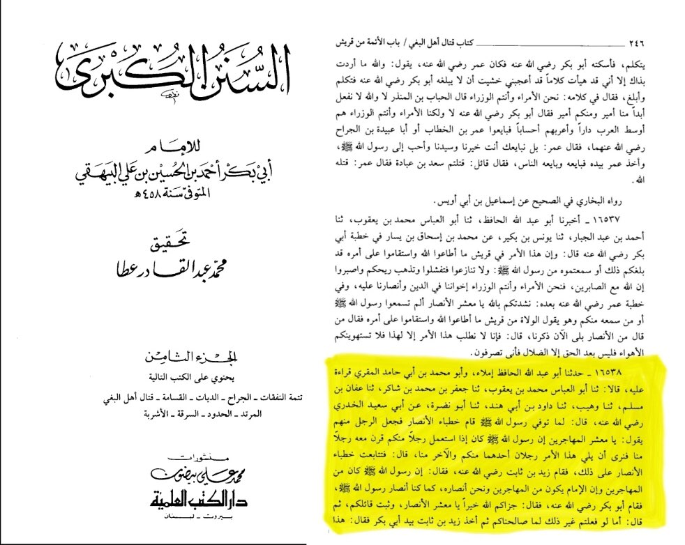
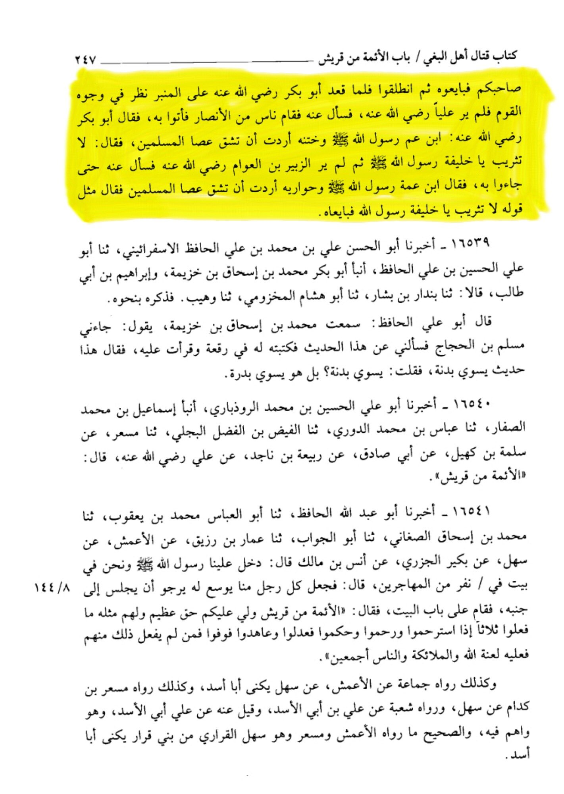
If we go to Kitaab Sunan Al Kubraa by Imam Al Bayhaqi (ra) He narrates
He said: When the Messenger of Allah saw died, the preachers of the Ansar stood up and made the man among say:
O community of Muhajiroon, if the Messenger of Allah used to hire a man from among you, he would accompany a man
with him From us, we see that two men will follow this matter, one of you and the other of us. He said:
So I followed the preachers The Ansar agreed on that, so Zaid bin Thabit, ra got up and said: The Messenger of Allah was from The Muhajiroon,
and the Imam is from the Muhajiroon, and we are his supporters, just as we were the supporters of the Messenger of Allah. So Abu Bakr,
ra got up and said: May Allah reward you well, O people of the Ansar, and prove your sayings, then He said: If you
had done otherwise, we would not have made peace with you.
Then Zayd ibn Thaabit took the hand of Abu bakr and said: This Your companion, so they pledged allegiance to him,
then left, and when Abu Bakr, ra sat on the pulpit, he looked at the faces of The people did not see Ali, may ra
so he asked about him, so people from the Ansar got up and brought him. Abu Bakr said May Allah have mercy on him: the cousin of Allah's Messenger,
and you circumcised him. You wanted to split the stick of the Muslims, so he did not see Al-Zubayr bin Al-Awwam, ra, so he asked about him until They brought him, so the
cousin of the Messenger of Allah (Ali) ra said to him and his two
disciples: You wanted to split the stick of the Muslims, so he said a parable He said: Do not be tempted, O successor of the Messenger of Allah,
so pledge allegiance to him. AND HE GAVE BAYAH TO HIM
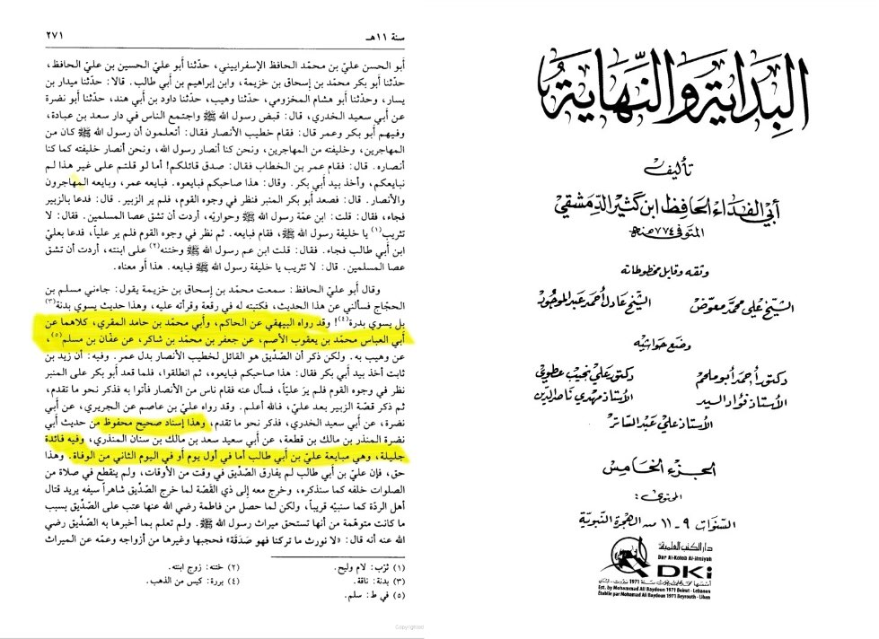
Ibn Kathir quoted the above narration and stated
"And this is a saheeh protected chain and in it is great benefit as it shows Ali gave bayah on the first or 2nd day"
 Ali رضي الله عنه and Al Zubair رضي الله عنه said: “We see that Abu Bakr رضي الله عنه is most worthy after the Prōphēt ﷺ, he is the person of the cave,
he is the second from the 2 in the cave,
indeed we know about his honor and status, and the Prōphēt ﷺ told him to lead the salah in his lifetime"
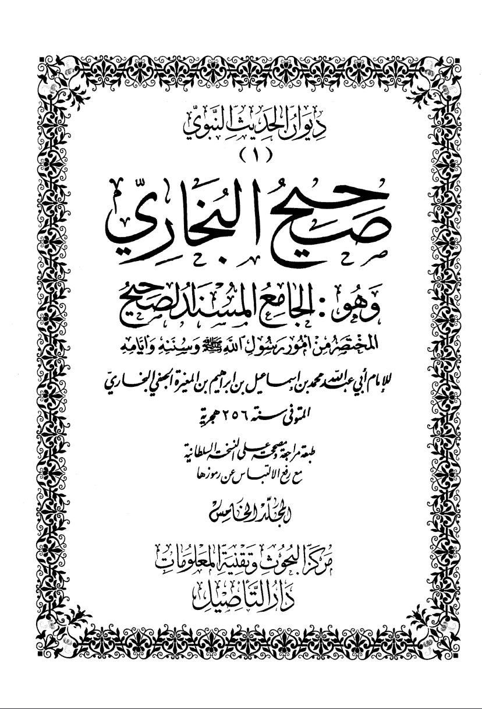
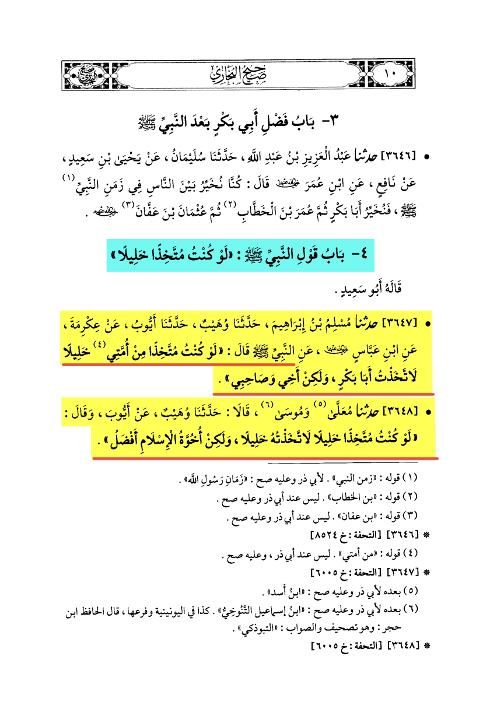
Narrated by Ibn Abbas:
The Prophet (ﷺ) said, "If I were to take a Khalil, I would have taken Abu Bakr, but he is my brother and my companion.“
in another narration:
Narrated by Aiyub:
The Prophet (ﷺ) said, "If I were to take a Khalil, I would have taken him (i.e. Abu Bakr) as a Khalil, but the Islamic brotherhood is better."
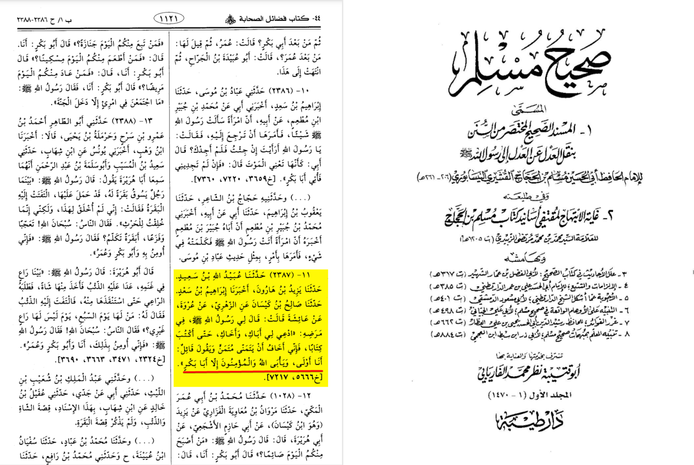
A'isha reported that Allah's Messenger (ﷺ) in his (last) illness asked me to call Abu Bakr, her father, and her brother too, so that he might write a document,
for he feared that someone else might be desirous of succeeding him and that some claimant may say:
I have better claim to it, whereas Allah and the Faithful do not substantiate the claim of anyone but that of Abu Bakr.
عَائِشَةَ، قَالَتْ قَالَ لِي رَسُولُ اللَّهِ صلى الله عليه وسلم فِي مَرَضِهِ " ادْعِي لِي أَبَا بَكْرٍ وَأَخَاكِ حَتَّى أَكْتُبَ كِتَابًا فَإِنِّي أَخَافُ أَنْ يَتَمَنَّى مُتَمَنٍّ وَيَقُولَ قَائِلٌ أَنَا أَوْلَى . وَيَأْبَى اللَّهُ وَالْمُؤْمِنُونَ إِلاَّ أَبَا بَكْرٍ
Allah's Messenger (ﷺ) is reported to have said: Behold, of all people the most generous toward me in regard to his companionship and his property was Abu Bakr and were I
to choose anyone as my bosom friend, I would have chosen Abu Bakr as my dear friend, but (for him) I cherish Islamic brotherliness and love.
وَقَالَ رَسُولُ اللَّهِ صلى الله عليه وسلم " إِنَّ أَمَنَّ النَّاسِ عَلَىَّ فِي مَالِهِ وَصُحْبَتِهِ أَبُو بَكْرٍ وَلَوْ كُنْتُ مُتَّخِذًا خَلِيلاً لاَتَّخَذْتُ أَبَا بَكْرٍ خَلِيلاً وَلَكِنْ أُخُوَّةُ الإِسْلاَمِ لاَ تُبْقَيَنَّ فِي الْمَسْجِدِ خَوْخَةٌ إِلاَّ خَوْخَةَ أَبِي بَكْرٍ
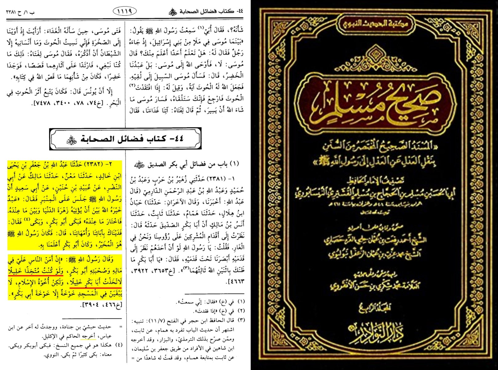
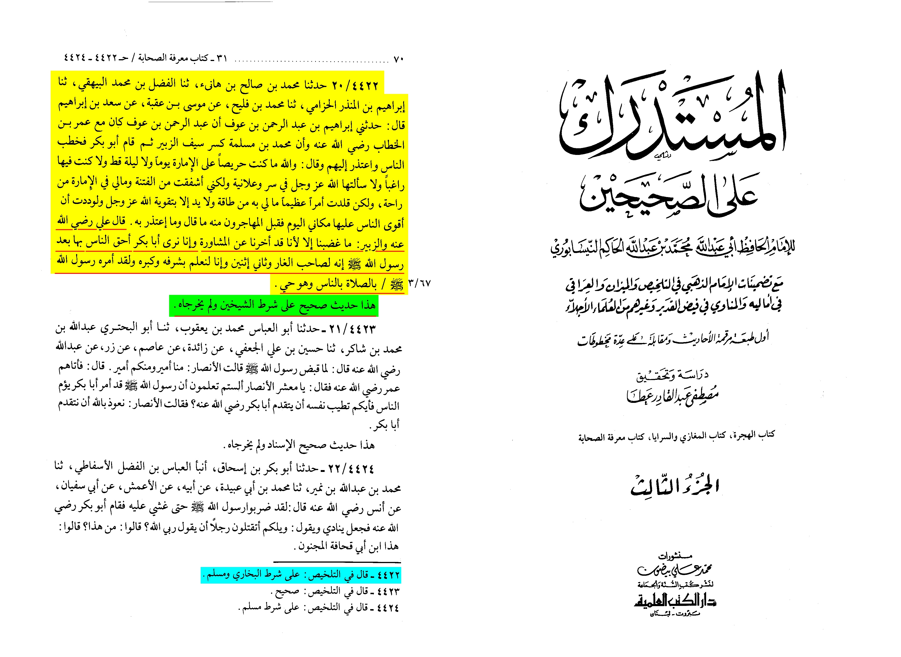
ʿAlī RA and Az-Zubaīr RA said:
“[…] Nothing upsetted us except for the fact that we were late to the consultation, and we see that Abū Bakr is the most worthy of it (successorship)
after the Prophet of Allāh ﷺ, verily he is the person of the cave (Ḡhar) and the second person (with the Prophet ﷺ in the cave), we know his honor and status,
and the Prophet ﷺ appointed him to pray with the people during his lifetime”
Al-Hākim Al-Naysābūrī says: “This report is authentic upon the conditions of Bukhārī and Muslīm”
Imām Ad-Ḍhabī in his Talkhees states: “(Authentic) upon the conditions of Bukhārī and Muslīm”
[Al-Mustadrak ʿAla Aṣ-Ṣaḥiḥayn vol. 3, pg. 70]
https://sunnah.com/bukhari:3671
https://sunnah.com/ahmad:833
https://sunnah.com/ahmad:834
https://sunnah.com/ahmad:835
https://sunnah.com/ahmad:836
https://sunnah.com/ahmad:837
https://sunnah.com/ahmad:878
https://sunnah.com/ahmad:879
https://sunnah.com/ahmad:880
https://sunnah.com/ahmad:895
https://sunnah.com/ahmad:908
https://sunnah.com/ahmad:909
https://sunnah.com/ahmad:926
https://sunnah.com/ahmad:932
https://sunnah.com/ahmad:933
https://sunnah.com/ahmad:934
https://sunnah.com/ahmad:1020
https://sunnah.com/ahmad:1030
https://sunnah.com/ahmad:1031
https://sunnah.com/ahmad:1032
https://sunnah.com/ahmad:1040
https://sunnah.com/ahmad:1051
https://sunnah.com/ahmad:1052
https://sunnah.com/ahmad:1054
https://sunnah.com/ahmad:1060
https://sunnah.com/ahmad:1107
https://sunnah.com/ahmad:1256
https://sunnah.com/ahmad:1259
https://sunnah.com/ibnmajah:106
https://sunnah.com/abudawud:4629
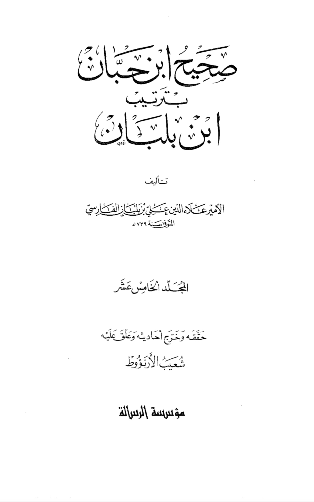
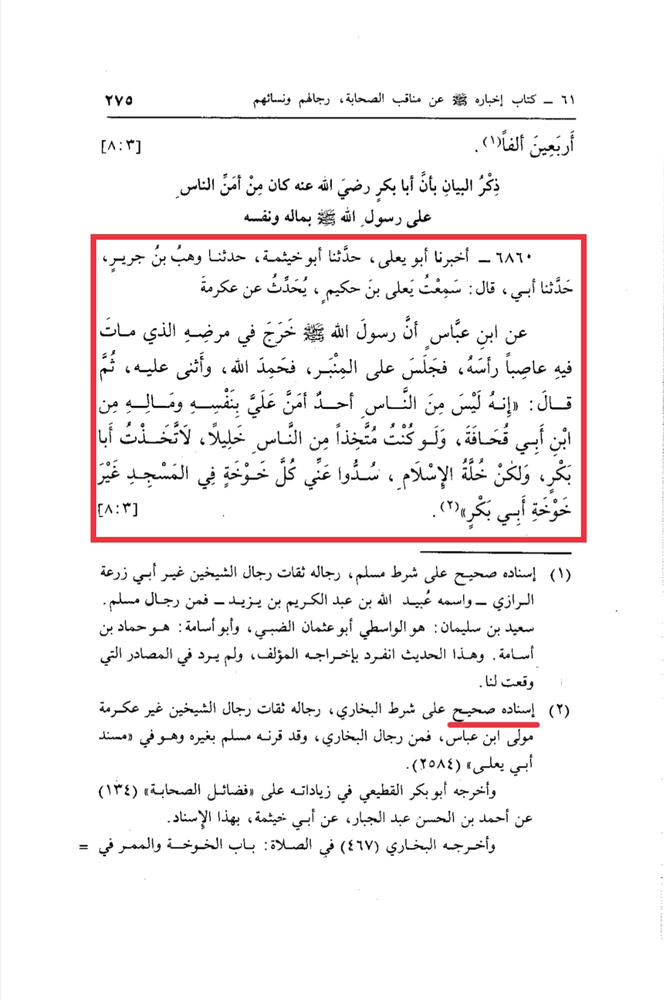
The prophet said: There is no one who had done more favor to me with life and property than Abu Bakr bin abi Quhafah.
If I were to take a Khalil, I would certainly have taken Abu Bakr.
Ali رضي الله عنه and Al Zubair رضي الله عنه said: “We see that Abu Bakr رضي الله عنه is most worthy after the Prōphēt ﷺ, he is the person of the cave,
he is the second from the 2 in the cave,
indeed we know about his honor and status, and the Prōphēt ﷺ told him to lead the salah in his lifetime"
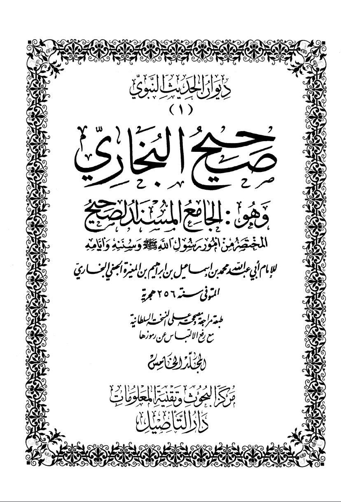
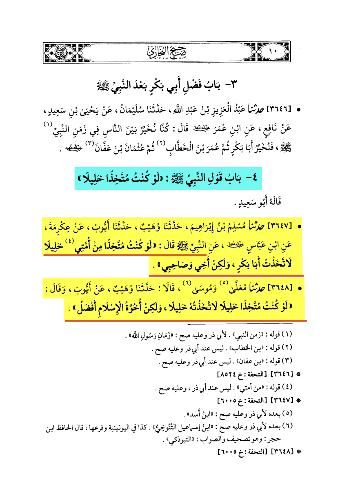
Narrated by Ibn Abbas:
The Prophet (ﷺ) said, "If I were to take a Khalil, I would have taken Abu Bakr, but he is my brother and my companion.“
in another narration:
Narrated by Aiyub:
The Prophet (ﷺ) said, "If I were to take a Khalil, I would have taken him (i.e. Abu Bakr) as a Khalil, but the Islamic brotherhood is better."
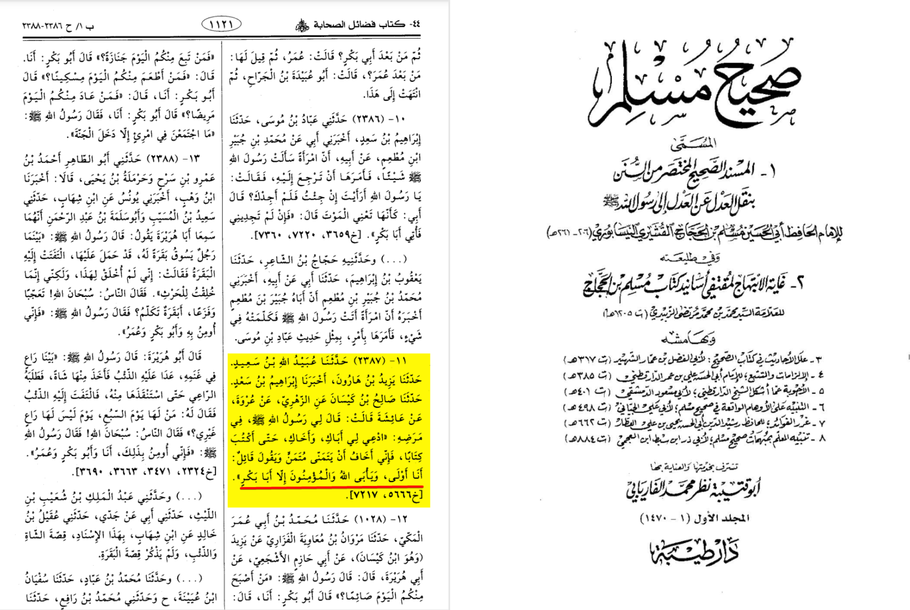
A'isha reported that Allah's Messenger (ﷺ) in his (last) illness asked me to call Abu Bakr, her father, and her brother too, so that he might write a document,
for he feared that someone else might be desirous of succeeding him and that some claimant may say:
I have better claim to it, whereas Allah and the Faithful do not substantiate the claim of anyone but that of Abu Bakr.
عَائِشَةَ، قَالَتْ قَالَ لِي رَسُولُ اللَّهِ صلى الله عليه وسلم فِي مَرَضِهِ " ادْعِي لِي أَبَا بَكْرٍ وَأَخَاكِ حَتَّى أَكْتُبَ كِتَابًا فَإِنِّي أَخَافُ أَنْ يَتَمَنَّى مُتَمَنٍّ وَيَقُولَ قَائِلٌ أَنَا أَوْلَى . وَيَأْبَى اللَّهُ وَالْمُؤْمِنُونَ إِلاَّ أَبَا بَكْرٍ
Allah's Messenger (ﷺ) is reported to have said: Behold, of all people the most generous toward me in regard to his companionship and his property was Abu Bakr and were I
to choose anyone as my bosom friend, I would have chosen Abu Bakr as my dear friend, but (for him) I cherish Islamic brotherliness and love.
وَقَالَ رَسُولُ اللَّهِ صلى الله عليه وسلم " إِنَّ أَمَنَّ النَّاسِ عَلَىَّ فِي مَالِهِ وَصُحْبَتِهِ أَبُو بَكْرٍ وَلَوْ كُنْتُ مُتَّخِذًا خَلِيلاً لاَتَّخَذْتُ أَبَا بَكْرٍ خَلِيلاً وَلَكِنْ أُخُوَّةُ الإِسْلاَمِ لاَ تُبْقَيَنَّ فِي الْمَسْجِدِ خَوْخَةٌ إِلاَّ خَوْخَةَ أَبِي بَكْرٍ
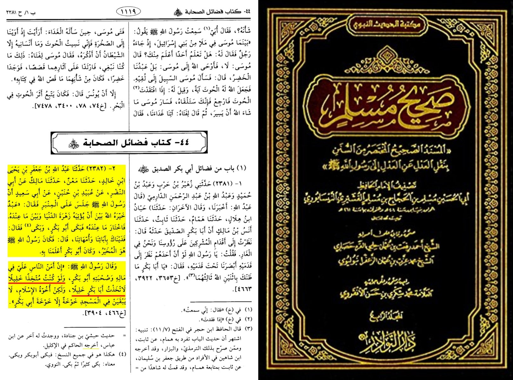
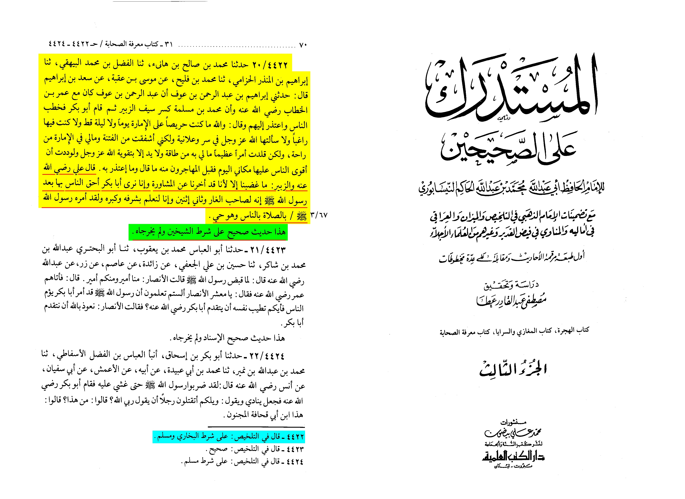
ʿAlī RA and Az-Zubaīr RA said:
“[…] Nothing upsetted us except for the fact that we were late to the consultation, and we see that Abū Bakr is the most worthy of it (successorship)
after the Prophet of Allāh ﷺ, verily he is the person of the cave (Ḡhar) and the second person (with the Prophet ﷺ in the cave), we know his honor and status,
and the Prophet ﷺ appointed him to pray with the people during his lifetime”
Al-Hākim Al-Naysābūrī says: “This report is authentic upon the conditions of Bukhārī and Muslīm”
Imām Ad-Ḍhabī in his Talkhees states: “(Authentic) upon the conditions of Bukhārī and Muslīm”
[Al-Mustadrak ʿAla Aṣ-Ṣaḥiḥayn vol. 3, pg. 70]
https://sunnah.com/bukhari:3671
https://sunnah.com/ahmad:833
https://sunnah.com/ahmad:834
https://sunnah.com/ahmad:835
https://sunnah.com/ahmad:836
https://sunnah.com/ahmad:837
https://sunnah.com/ahmad:878
https://sunnah.com/ahmad:879
https://sunnah.com/ahmad:880
https://sunnah.com/ahmad:895
https://sunnah.com/ahmad:908
https://sunnah.com/ahmad:909
https://sunnah.com/ahmad:926
https://sunnah.com/ahmad:932
https://sunnah.com/ahmad:933
https://sunnah.com/ahmad:934
https://sunnah.com/ahmad:1020
https://sunnah.com/ahmad:1030
https://sunnah.com/ahmad:1031
https://sunnah.com/ahmad:1032
https://sunnah.com/ahmad:1040
https://sunnah.com/ahmad:1051
https://sunnah.com/ahmad:1052
https://sunnah.com/ahmad:1054
https://sunnah.com/ahmad:1060
https://sunnah.com/ahmad:1107
https://sunnah.com/ahmad:1256
https://sunnah.com/ahmad:1259
https://sunnah.com/ibnmajah:106
https://sunnah.com/abudawud:4629
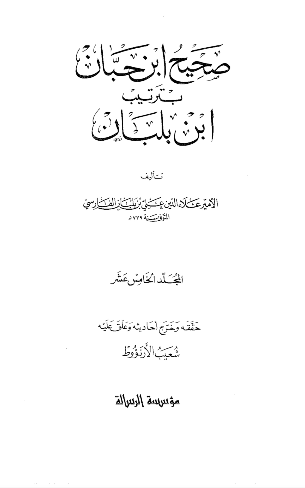
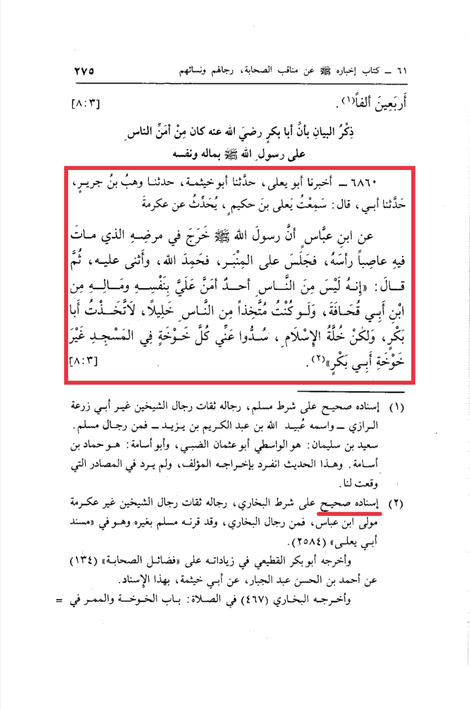
The prophet said: There is no one who had done more favor to me with life and property than Abu Bakr bin abi Quhafah.
If I were to take a Khalil, I would certainly have taken Abu Bakr.